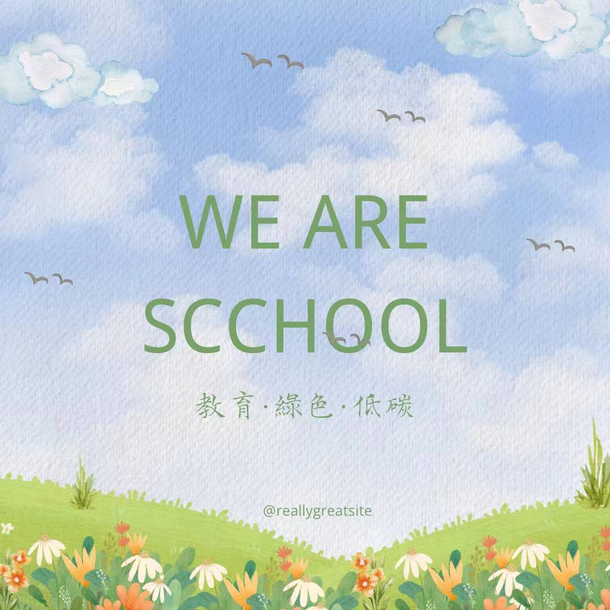

About SCCHOOL
Hong Kong
Hong Kong
We are a society dedicated to environmental education, aiming to promote a low-carbon lifestyle through individual actions and collective efforts, and to raise awareness and involvement of more secondary students in environmental conservation.
Our Organization was founded in 2024 with the aim of：
Promote Sustainability: Our campaigns and initiatives aim to promote sustainable practices and raise awareness about the importance of environmental sustainability.
Encourage Active Participation: We strive to engage secondary students in actively participating in environmental conservation activities, fostering a sense of responsibility and empowerment.
Beneficial for Their Future Career: We emphasize the relevance of environmental awareness and action for future careers, highlighting the importance of sustainability in various fields.
Tree Planting: We organize tree planting events to contribute to reforestation efforts and combat deforestation. Vegetarian Week: We promote the benefits of a vegetarian diet through a dedicated week of educational activities and campaigns. School-based Recycling: We encourage recycling practices within our school community to reduce waste and promote a circular economy. Collaboration with NGOs: We collaborate with non-governmental organizations (NGOs) to support and participate in environmental conservation initiatives.
If you have any questions or would like to get involved, please feel free to reach out to us. You can contact us via email at jane261453002@gmail.com or connect with us on social media: https://www.instagram.com/scchool2024/?igsh=aXJidzV6Nmd6MmQz